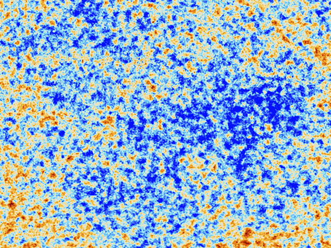
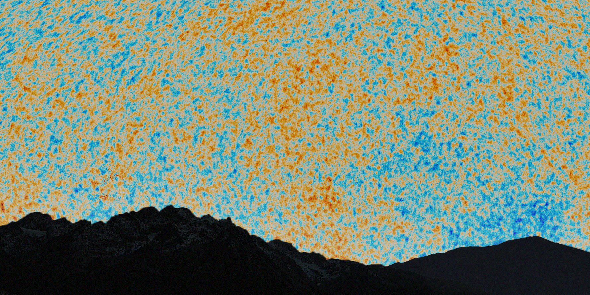
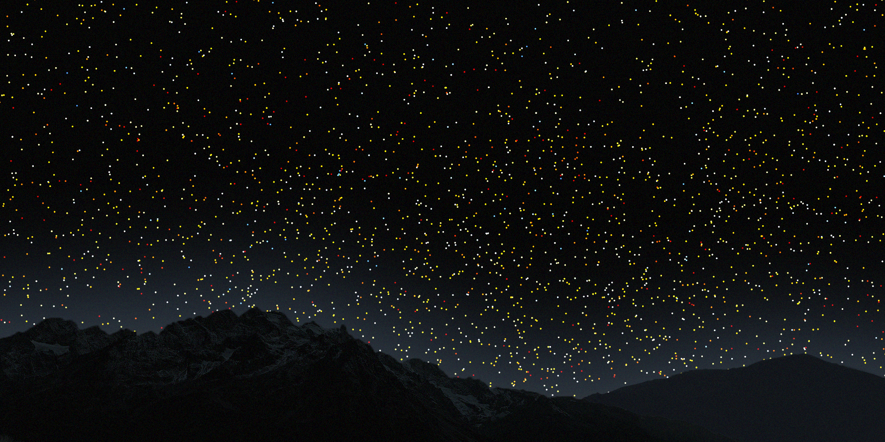
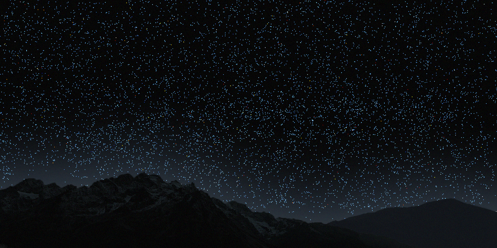
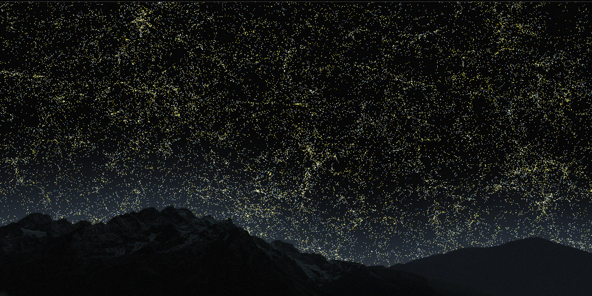
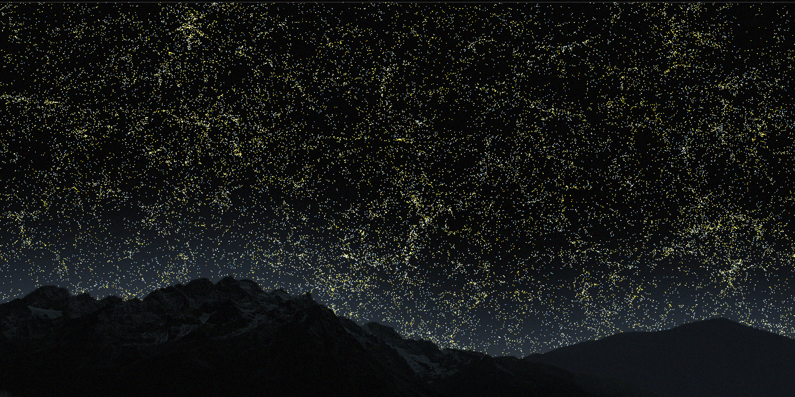

the cosmic microwave backround
This is an actual photograph of the first flash of light emitted soon after
the big bang, 13.7 billion years ago. This light has been stretched by
the expansion of the Universe and arrives at us as radiowaves.
This is the edge of the observable Universe.
See the sky view.


redshifted quasars
At these distances, the expansion of the Universe is so great that the
blue photons from quasars get stretched and appear redder.
A bit farther, we encounter an epoch during which the Universe is filled with hydrogen gas that prevents the propagation
of visible light we could observe today. This epoch is called the "dark ages".
See the sky view.


quasars
Quasars are massive black holes located at the center of certain galaxies.
As they accrete surrounding gas and stars, they become extremely bright and
can be seen across the Universe. Their light is blueish.
See the sky view.
Beyond this distance, galaxies are harder to see. However, we can still see quasars.
They are much brighter and bluer.


redshifted elliptical galaxies
As the Universe expands, photons gets stretched and objects appear redder.
This is the case for the elliptical galaxies. At these distances,
they appear red to us.As we no longer detect the fainter spiral galaxies,
the filamentary structure is less visible. See the sky view.


spiral galaxies
Each dot is a galaxy shown with its apparent color.
Spiral galaxies are faint and blue. Our galaxy, the Milky Way,
is a blue spiral that would look like one of these if we
could observe it from the outside.
See the sky view.


 



{kind=link}
{kind=link}
{kind=link}
{kind=link}